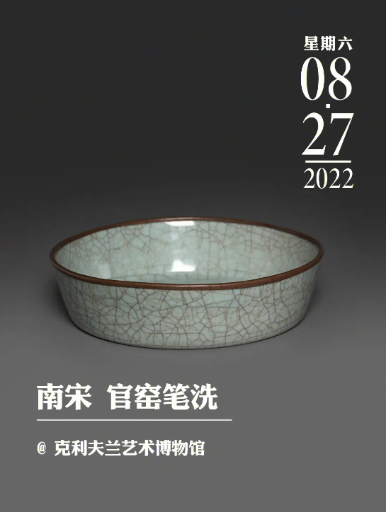

(一)岭南土产玳瑁的证据
本文所探讨的“海贝”为我国商代至汉代遗址墓葬中发现的货贝和环纹货贝。由于两种贝个体相似、习性相同、 产地相近并在古代亦无区别使用的边象，故用“海贝"一词概而言之，货贝一般壳长2.5厘米、宽2厘米，近卵圆形，背部隆起， 两侧扩张。壳面多呈鲜黄色或淡黄色，具有瓷质光泽，腹面多呈黄白色或白色。壳口窄长，唇齿较粗壮。环纹货贝大小、 形态近似前种，但壳面呈青灰白色，背部上有一个带缺口的金黄色环纹[1150-53。两种贝均生活在潮间带中、低潮区的岩石块 或珊瑚礁下，广布于西太平洋暖海区和印度洋等地。

海贝的分布范围与海洋环境密切相关。货贝和环纹货贝均属腹足纲宝贝科动物。中国科学院海洋研究所张素萍等人的研究表明:
宝贝科动物在我国分布最北界为浙江省以南沿海，黄海、渤海区没有分布[118。货贝和环纹货贝又下属宝贝科货贝属的不同种，
在我国，除一部分生长于属东海海域的台湾南部海域处，大部分分布于西沙群岛、南沙群岛等海南诸岛的南海海域中。以上有海
贝分布的海域的温度全年都在20℃以上。了解海贝在我国目前生有的分布情况和适温情况，有助于我们更好地探究商至秦汉中原
内陆海贝的来源问题。
自晚更新世以来，我国沿海经历了数次大规模海侵海退。距今约7000~5000年，海面高度和海岸线位置已接近现代。之后， 海陆大格局基本稳定海洋生物的分布范围也相对稳定。据竺可桢等人的研究显示:殷商时期是我国气候的暖和期，年均气温较 现代高2℃左右，彭柯和朱岩石两位学者根据这一研究成果并结合太阳辐射与蒸发平衡等因素，认为仰韶温暖期我国各海区 近海海洋温度较现代应递升2℃~3~C13]120。而我国现代二月份四大海域的表层(0米深度)水温如下:黄海、渤海在0℃~12℃之 间，东海在5℃~23℃之间，南海在16℃~28℃之间，据此，可以推算出我国商代二月份四大海域的表层(0米深度)水温为: 黄海、渤海最高达15℃,东海在7℃~26℃之间，南海在18℃~31℃之间。这些数据说明渤海和黄海在商代都没有适宜海贝生存 的温度。我国贝类学专家齐钟彦教授也曾就商代的海贝问题明确指出:“货贝和环纹货贝的适温情况在黄、渤两海是不可能有分布的。